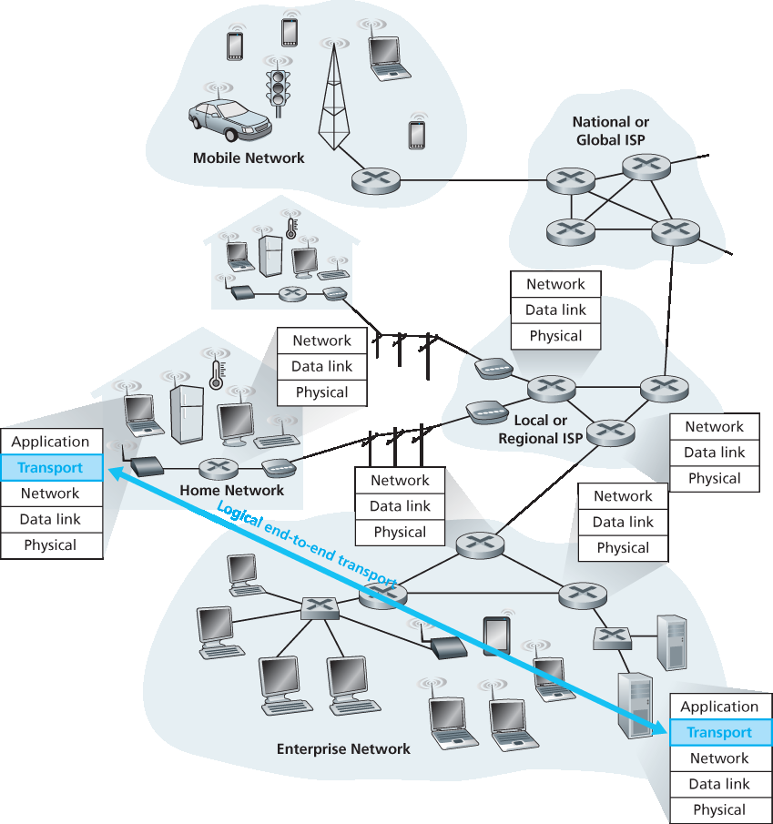

3.1 简介和传输层服务#
3.1 Introduction and Transport-Layer Services
In the previous two chapters we touched on the role of the transport layer and the services that it provides. Let’s quickly review what we have already learned about the transport layer.
A transport-layer protocol provides for logical communication between application processes running on different hosts. By logical communication, we mean that from an application’s perspective, it is as if the hosts running the processes were directly connected; in reality, the hosts may be on opposite sides of the planet, connected via numerous routers and a wide range of link types. Application processes use the logical communication provided by the transport layer to send messages to each other, free from the worry of the details of the physical infrastructure used to carry these messages. Figure 3.1 illustrates the notion of logical communication.
As shown in Figure 3.1, transport-layer protocols are implemented in the end systems but not in network routers. On the sending side, the transport layer converts the application-layer messages it receives from a sending application process into transport-layer packets, known as transport-layer segments in Internet terminology. This is done by (possibly) breaking the application messages into smaller chunks and adding a transport-layer header to each chunk to create the transport-layer segment. The transport layer then passes the segment to the network layer at the sending end system, where the segment is encapsulated within a network-layer packet (a datagram) and sent to the destination. It’s important to note that network routers act only on the network-layer fields of the datagram; that is, they do not examine the fields of the transport-layer segment encapsulated with the datagram. On the receiving side, the network layer extracts the transport-layer segment from the datagram and passes the segment up to the transport layer. The transport layer then processes the received segment, making the data in the segment available to the receiving application.
More than one transport-layer protocol may be available to network applications. For example, the Internet has two protocols—TCP and UDP. Each of these protocols provides a different set of transport- layer services to the invoking application.
3.1.1 传输层和网络层之间的关系#
3.1.1 Relationship Between Transport and Network Layers
Recall that the transport layer lies just above the network layer in the protocol stack. Whereas a transport-layer protocol provides logical communication between processes running on different hosts, a network-layer protocol provides logical-communication between hosts. This distinction is subtle but important. Let’s examine this distinction with the aid of a household analogy.

Figure 3.1 The transport layer provides logical rather than physical communication between application processes
Consider two houses, one on the East Coast and the other on the West Coast, with each house being home to a dozen kids. The kids in the East Coast household are cousins of the kids in the West Coast household. The kids in the two households love to write to each other—each kid writes each cousin every week, with each letter delivered by the traditional postal service in a separate envelope. Thus, each household sends 144 letters to the other household every week. (These kids would save a lot of money if they had e-mail!) In each of the households there is one kid—Ann in the West Coast house and Bill in the East Coast house—responsible for mail collection and mail distribution. Each week Ann visits all her brothers and sisters, collects the mail, and gives the mail to a postal-service mail carrier, who makes daily visits to the house. When letters arrive at the West Coast house, Ann also has the job of distributing the mail to her brothers and sisters. Bill has a similar job on the East Coast.
In this example, the postal service provides logical communication between the two houses—the postal service moves mail from house to house, not from person to person. On the other hand, Ann and Bill provide logical communication among the cousins—Ann and Bill pick up mail from, and deliver mail to, their brothers and sisters. Note that from the cousins’ perspective, Ann and Bill are the mail service, even though Ann and Bill are only a part (the end-system part) of the end-to-end delivery process. This household example serves as a nice analogy for explaining how the transport layer relates to the network layer:
application messages = letters in envelopes
processes = cousins
hosts (also called end systems) = houses
transport-layer protocol = Ann and Bill
network-layer protocol = postal service (including mail carriers)
Continuing with this analogy, note that Ann and Bill do all their work within their respective homes; they are not involved, for example, in sorting mail in any intermediate mail center or in moving mail from one mail center to another. Similarly, transport-layer protocols live in the end systems. Within an end system, a transport protocol moves messages from application processes to the network edge (that is, the network layer) and vice versa, but it doesn’t have any say about how the messages are moved within the network core. In fact, as illustrated in Figure 3.1, intermediate routers neither act on, nor recognize, any information that the transport layer may have added to the application messages.
Continuing with our family saga, suppose now that when Ann and Bill go on vacation, another cousin pair—say, Susan and Harvey—substitute for them and provide the household-internal collection and delivery of mail. Unfortunately for the two families, Susan and Harvey do not do the collection and delivery in exactly the same way as Ann and Bill. Being younger kids, Susan and Harvey pick up and drop off the mail less frequently and occasionally lose letters (which are sometimes chewed up by the family dog). Thus, the cousin-pair Susan and Harvey do not provide the same set of services (that is, the same service model) as Ann and Bill. In an analogous manner, a computer network may make available multiple transport protocols, with each protocol offering a different service model to applications.
The possible services that Ann and Bill can provide are clearly constrained by the possible services that the postal service provides. For example, if the postal service doesn’t provide a maximum bound on how long it can take to deliver mail between the two houses (for example, three days), then there is no way that Ann and Bill can guarantee a maximum delay for mail delivery between any of the cousin pairs. In a similar manner, the services that a transport protocol can provide are often constrained by the service model of the underlying network-layer protocol. If the network-layer protocol cannot provide delay or bandwidth guarantees for transport-layer segments sent between hosts, then the transport-layer protocol cannot provide delay or bandwidth guarantees for application messages sent between processes.
Nevertheless, certain services can be offered by a transport protocol even when the underlying network protocol doesn’t offer the corresponding service at the network layer. For example, as we’ll see in this chapter, a transport protocol can offer reliable data transfer service to an application even when the underlying network protocol is unreliable, that is, even when the network protocol loses, garbles, or duplicates packets. As another example (which we’ll explore in Chapter 8 when we discuss network security), a transport protocol can use encryption to guarantee that application messages are not read by intruders, even when the network layer cannot guarantee the confidentiality of transport-layer segments.
3.1.2 Internet 中的传输层概述#
3.1.2 Overview of the Transport Layer in the Internet
Recall that the Internet makes two distinct transport-layer protocols available to the application layer. One of these protocols is UDP (User Datagram Protocol), which provides an unreliable, connectionless service to the invoking application. The second of these protocols is TCP (Transmission Control Protocol), which provides a reliable, connection-oriented service to the invoking application. When designing a network application, the application developer must specify one of these two transport protocols. As we saw in Section 2.7, the application developer selects between UDP and TCP when creating sockets.
To simplify terminology, we refer to the transport-layer packet as a segment. We mention, however, that the Internet literature (for example, the RFCs) also refers to the transport-layer packet for TCP as a segment but often refers to the packet for UDP as a datagram. But this same Internet literature also uses the term datagram for the network-layer packet! For an introductory book on computer networking such as this, we believe that it is less confusing to refer to both TCP and UDP packets as segments, and reserve the term datagram for the network-layer packet.
Before proceeding with our brief introduction of UDP and TCP, it will be useful to say a few words about the Internet’s network layer. (We’ll learn about the network layer in detail in Chapters 4 and 5.) The Internet’s network-layer protocol has a name—IP, for Internet Protocol. IP provides logical communication between hosts. The IP service model is a best-effort delivery service. This means that IP makes its “best effort” to deliver segments between communicating hosts, but it makes no guarantees. In particular, it does not guarantee segment delivery, it does not guarantee orderly delivery of segments, and it does not guarantee the integrity of the data in the segments. For these reasons, IP is said to be an unreliable service. We also mention here that every host has at least one network- layer address, a so-called IP address. We’ll examine IP addressing in detail in Chapter 4; for this chapter we need only keep in mind that each host has an IP address.
Having taken a glimpse at the IP service model, let’s now summarize the service models provided by UDP and TCP. The most fundamental responsibility of UDP and TCP is to extend IP’s delivery service between two end systems to a delivery service between two processes running on the end systems. Extending host-to-host delivery to process-to-process delivery is called transport-layer multiplexing and demultiplexing. We’ll discuss transport-layer multiplexing and demultiplexing in the next section. UDP and TCP also provide integrity checking by including error-detection fields in their segments’ headers. These two minimal transport-layer services—process-to-process data delivery and error checking—are the only two services that UDP provides! In particular, like IP, UDP is an unreliable service—it does not guarantee that data sent by one process will arrive intact (or at all!) to the destination process. UDP is discussed in detail in Section 3.3.
TCP, on the other hand, offers several additional services to applications. First and foremost, it provides reliable data transfer. Using flow control, sequence numbers, acknowledgments, and timers (techniques we’ll explore in detail in this chapter), TCP ensures that data is delivered from sending process to receiving process, correctly and in order. TCP thus converts IP’s unreliable service between end systems into a reliable data transport service between processes. TCP also provides congestion control. Congestion control is not so much a service provided to the invoking application as it is a service for the Internet as a whole, a service for the general good. Loosely speaking, TCP congestion control prevents any one TCP connection from swamping the links and routers between communicating hosts with an excessive amount of traffic. TCP strives to give each connection traversing a congested link an equal share of the link bandwidth. This is done by regulating the rate at which the sending sides of TCP connections can send traffic into the network. UDP traffic, on the other hand, is unregulated. An application using UDP transport can send at any rate it pleases, for as long as it pleases.
A protocol that provides reliable data transfer and congestion control is necessarily complex. We’ll need several sections to cover the principles of reliable data transfer and congestion control, and additional sections to cover the TCP protocol itself. These topics are investigated in Sections 3.4 through 3.8. The approach taken in this chapter is to alternate between basic principles and the TCP protocol. For example, we’ll first discuss reliable data transfer in a general setting and then discuss how TCP specifically provides reliable data transfer. Similarly, we’ll first discuss congestion control in a general setting and then discuss how TCP performs congestion control. But before getting into all this good stuff, let’s first look at transport-layer multiplexing and demultiplexing.